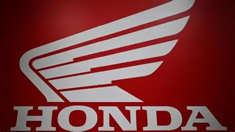
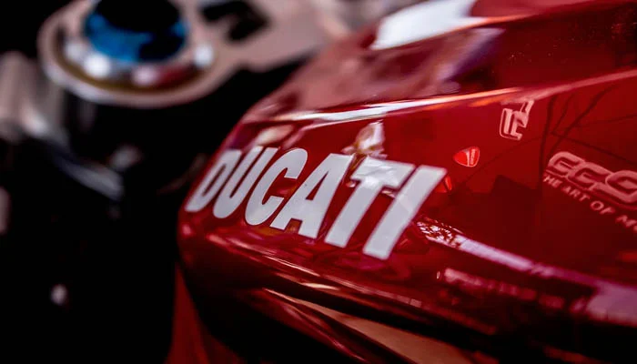
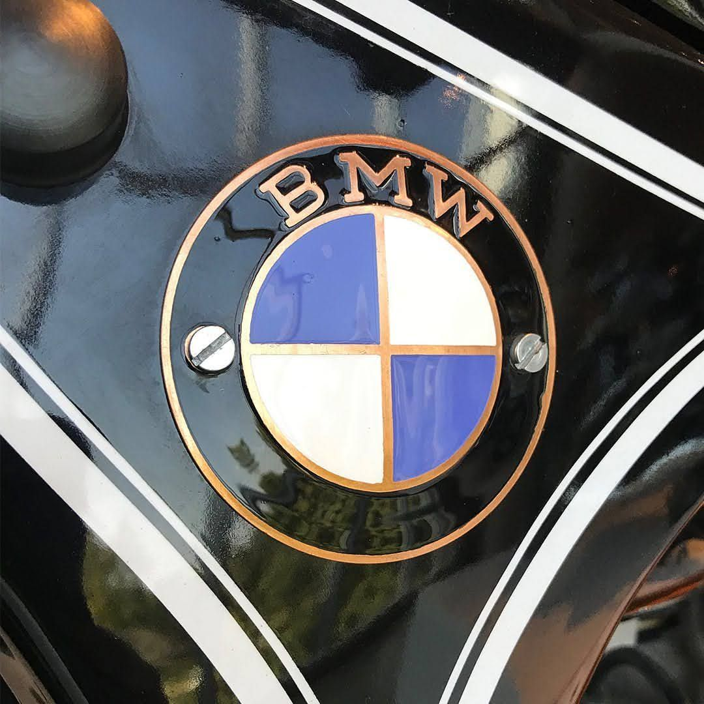
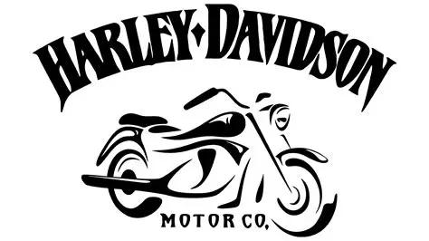

Índice de Marcas
Introducción
La industria de las motocicletas ha evolucionado gracias al trabajo de grandes fabricantes que han desarrollado modelos innovadores, motores más potentes y tecnologías que hoy forman parte de las motos modernas.
Cada marca posee una historia única y ha contribuido al crecimiento del motociclismo deportivo, turístico y de aventura.
Honda

Honda fue fundada en 1948 por Soichiro Honda en Japón. Actualmente es uno de los fabricantes de motocicletas más grandes del mundo.
La empresa se caracteriza por producir motocicletas confiables, económicas y tecnológicamente avanzadas.
Modelos Famosos
- Honda CBR1000RR.
- Honda Gold Wing.
- Honda Africa Twin.
- Honda CBR600RR.
Aportaciones
- Innovación tecnológica.
- Gran presencia en MotoGP.
- Producción masiva mundial.
Yamaha
Yamaha Motor Company nació en 1955 en Japón. Desde entonces ha desarrollado motocicletas deportivas, urbanas y de competición muy exitosas.
La marca es conocida por su excelente rendimiento y por su participación en campeonatos internacionales de motociclismo.
Modelos Famosos
- Yamaha YZF-R1.
- Yamaha MT-07.
- Yamaha MT-09.
- Yamaha Tenere 700.
Kawasaki
Kawasaki Heavy Industries es una empresa japonesa con una larga trayectoria en la fabricación de motocicletas de alto rendimiento.
Sus modelos deportivos destacan por su velocidad, potencia y diseño agresivo.
Modelos Destacados
- Kawasaki Ninja H2R.
- Kawasaki ZX-10R.
- Kawasaki Z900.
- Kawasaki Versys 650.
Ducati

Ducati es una empresa italiana fundada en 1926. Es reconocida mundialmente por fabricar motocicletas deportivas de alto nivel y diseños exclusivos.
Sus motos poseen gran prestigio debido a su rendimiento y éxito en competencias internacionales.
Modelos Famosos
- Ducati Panigale V4.
- Ducati Monster.
- Ducati Multistrada.
- Ducati Streetfighter V4.
BMW Motorrad

BMW Motorrad representa la división de motocicletas de BMW. La marca alemana es conocida por fabricar motos seguras, cómodas y tecnológicamente avanzadas.
Sus motocicletas son muy populares para viajes de larga distancia y aventuras.
Modelos Importantes
- BMW S1000RR.
- BMW R1250GS.
- BMW F900R.
- BMW K1600GT.
Harley-Davidson

Harley-Davidson fue fundada en 1903 en Estados Unidos y es una de las marcas más icónicas del mundo.
Sus motocicletas se caracterizan por motores de gran cilindrada, diseño clásico y sonido inconfundible.
Modelos Famosos
- Harley-Davidson Sportster.
- Harley-Davidson Road King.
- Harley-Davidson Fat Boy.
- Harley-Davidson Street Glide.
Tabla Comparativa
| Marca | País | Fundación |
|---|---|---|
| Honda | Japón | 1948 |
| Yamaha | Japón | 1955 |
| Kawasaki | Japón | 1896 |
| Ducati | Italia | 1926 |
| BMW Motorrad | Alemania | 1923 |
| Harley-Davidson | Estados Unidos | 1903 |
Más Información
Ver las motos más rápidas del mundo